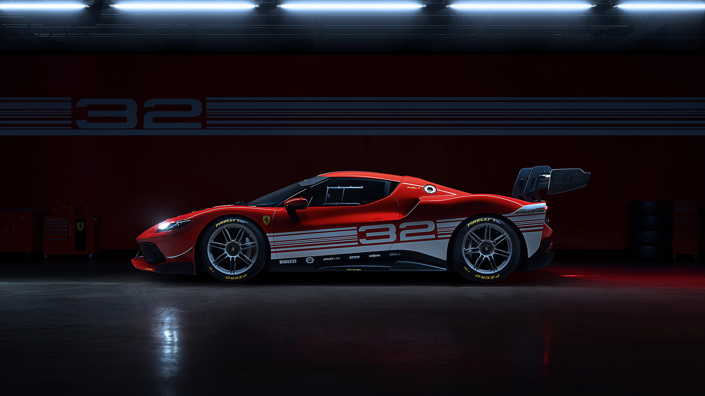
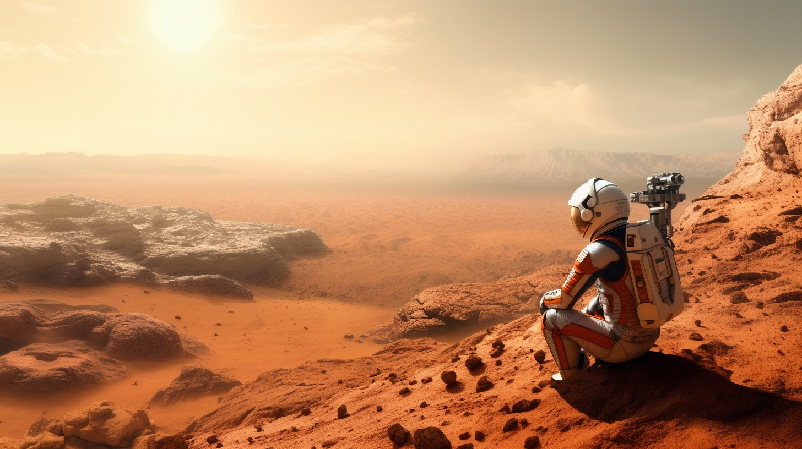
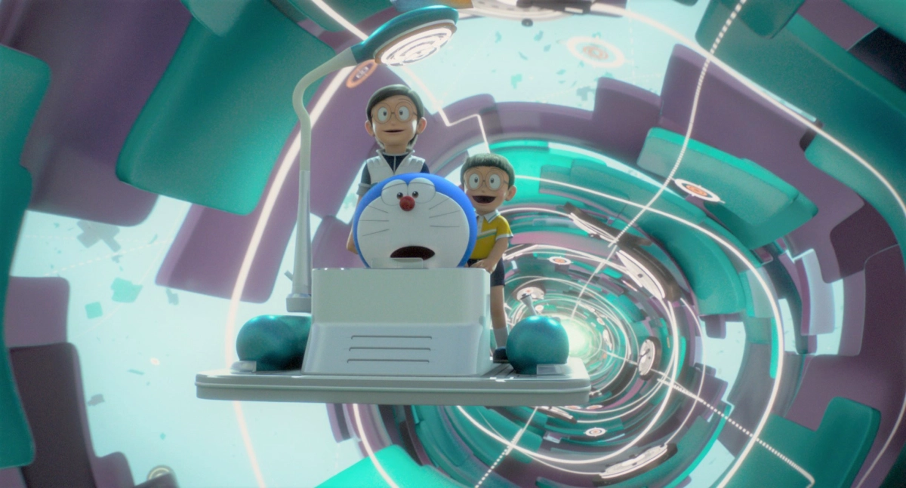

My Latest Project

Project 1: Build A Car
Projek Kali ini adalah membangun sebuah sport car bernama Ferrari 296 Challenge. Sebagai penerus 488 Challenge, mobil ini ditenagai oleh mesin V6 Twin Turbo 3.0L dengan tenaga sebesar 681hp

Project 2: Be A Martian
Projek Kali ini adalah membangun sebuah koloni di Mars untuk penghuni masa depan. Proyek ini melibatkan eksplorasi, teknologi tinggi, dan keberlanjutan di planet merah yang tak berujung.

Project 3: Time Travelling with Doraemon's Time Machine
Projek unik ini memungkinkan Anda menjelajahi waktu dengan mesin waktu ajaib Doraemon. Bersama teman kucing biru yang penuh kejutan, Anda akan merasakan petualangan luar biasa, mengunjungi masa lalu dan masa depan, dan menciptakan kenangan tak terlupakan.